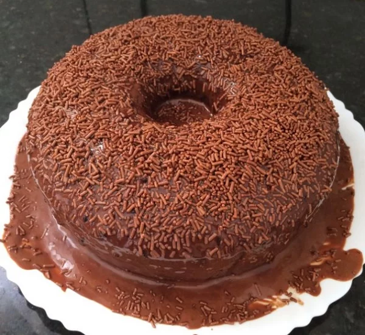

1 Massa
2 Coloque os líquidos no liqüidificador e bata até misturar bem. Coloque os outros ingredientes, sendo o fermento o último. Leve para assar em forno médio, numa forma untada e enfarinhada.
3 Cobertura
4 Para a cobertura, misture numa panela a manteiga, o achocolatado, o açúcar e o leite. Leve ao fogo até derreter e a calda ficar homogênea. Cubra o bolo ainda quente, furadinho com garfo.
